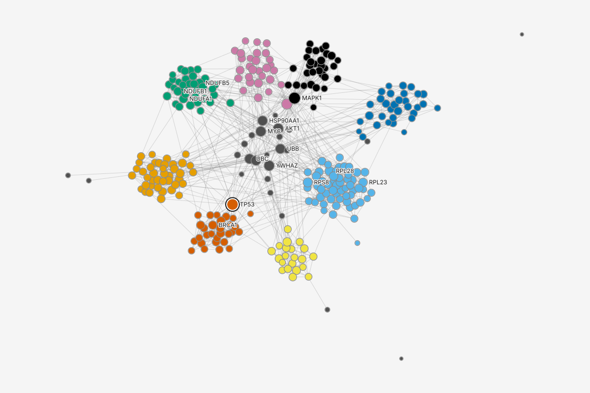
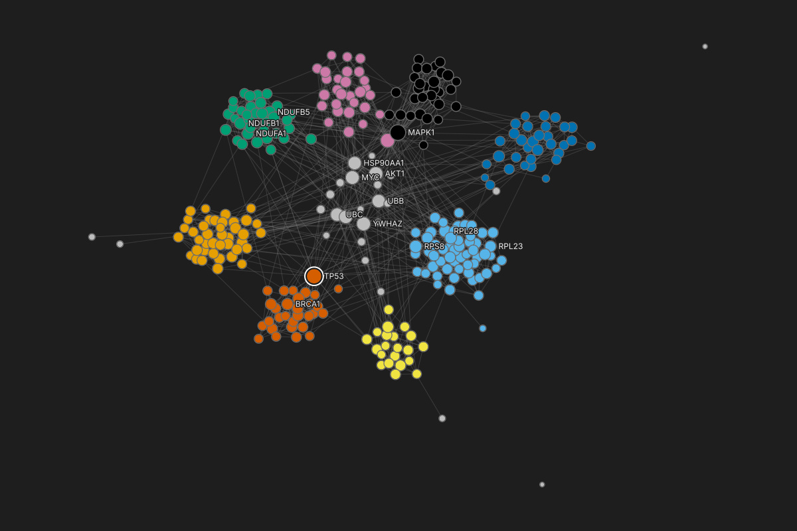

Runs live in the Results place on the rail: every run of a measure, with its settings and date. A run starts from Run a measure... at the top of that place, from the main menu's Algorithms, or from Quick actions (Ctrl+K), and it opens in place: its record replaces the list, and the back arrow or Esc returns to it. Betweenness on two real sizes: 300 human proteins, where it finishes at once, and 124,318 patents, where the exact run would take hours. Money on the March transfers: link counts are named as counts, and weighted degree answers to the money words. A value computed on a filtered graph names its scope ("0.419, on 60 of 77"). Each state is 1440 x 900 at its own link; the Notes button on each shows which part of the design framework and which compact-mantine component is behind each element, and what a screen reader hears. Pages follow your system theme; add ?theme=dark to force dark.
Screen reader hears: "Betweenness. How often a node lies on the shortest paths between other nodes. Button, 3 of 16."
Run a measure... opens the catalog as a menu from the head of the Results place: one list under the element's family names as plain headings, Degree first. The main menu's Algorithms and Quick actions list the same entries, read from graphty-element. The catalog is not a section of the place: the place holds runs, the menu offers what can run. compact-mantine Menu with labels and a right section.
Hover and keyboard focus show the description beside the menu, and past 10 s the band word (a rough duration such as "under a minute"). Nothing runs. On 300 proteins every entry is under 10 s, so no band word shows. principles 2; interaction-patterns 3.3. Tooltip.
Two kinds of mark look different. Closeness shows its variant as a dotted word, WF-corrected (a control that offers Harmonic centrality). Eigenvector shows a violated precondition: the warning mark and "3 components", offering PageRank. graph-conventions 2. The declared precondition waits on graphty-element.
One click runs it and opens the run in the Results place. A run that already exists and is current is opened, not run again. interaction-patterns 3.3.
A family word finds every entry in it; a name finds one. Searching by a question word ("brokers") waits on catalog aliases in graphty-element. output-homes 3. compact-mantine Spotlight-style list.
Each row's trailing slot carries what the catalog menu's entry carries: the band word past 10 s, a variant word or a precondition mark. The keyboard route passes the same check before the run. Figma's actions menu shows only a name and a source; this is the stated departure, proposed in framework-changes.md.
Enter runs the highlighted row, exactly as a click in the catalog menu; the run opens in the Results place.
Module color module
Ribosome56
Proteasome40
Complex I35
6 more
Quick actions
importantEsc
Ranks what matters most
Run Links (count)How many interactions each protein has
Run Total confidenceThe confidence of its interactions, added up
Run PageRankHow much a protein matters, counting how much its neighbors matter
Run BetweennessHow often a protein lies on the shortest paths between others
Run EigenvectorMatters when its neighbors matter!3 components
Screen reader hears: "Run Links (count). How many interactions each protein has. 1 of 5."
A word for what the reader wants finds the measures that answer it. "important" lists the ranking measures, simplest first, each with its one plain line, so the reader chooses by meaning, not by name.
Task words are aliases on the catalog's entries, read from graphty-element with the names and plain lines, so every consumer finds the same measures by the same words. Proposed to graphty-element.
Trailing marks are the catalog's: Eigenvector still carries its precondition, so the choice is made before the run, not after it fails.
Module color module
Ribosome56
Proteasome40
Complex I35
6 more
Quick actions
groupsEsc
Finds groups of proteins
Run LouvainSplits the proteins into groups that link more inside than out
Run LeidenLike Louvain, and every group it finds holds together
Run Label propagationEach protein joins the group most of its neighbors are in
Run Girvan-NewmanGroups found by cutting the busiest links first
Run K-coreThe tightly knit center: proteins with many links among each other
Screen reader hears: "Run Louvain. Splits the proteins into groups that link more inside than out. 1 of 5."
"groups" finds the Community family and K-core, which answer the same question from the Structure family. A run's groups arrive as a result the reader can style or turn into sets; nothing is grouped until a row is run.
Task words are aliases on the catalog's entries, read from graphty-element with the names and plain lines, so every consumer finds the same measures by the same words. Proposed to graphty-element.
Module color module
Ribosome56
Proteasome40
Complex I35
6 more
Quick actions
cheapest routeEsc
Finds a route between two proteins
Run Shortest path...Fewest steps, or lowest total cost, between two you pick
Screen reader hears: "Run Shortest path. Fewest steps, or lowest total cost, between two you pick. 1 of 1."
"cheapest route" finds Shortest path, under the catalog's Paths family. The dots say it asks before it runs: the two ends, and, because "cheapest" is a cost word, what confidence means for this run (a closer or stronger link, a longer or costlier step, more can pass through, Don't use confidence), with nothing chosen.
Task words are aliases on the catalog's entries, read from graphty-element with the names and plain lines, so every consumer finds the same measures by the same words. Proposed to graphty-element.
Screen reader hears: "Betweenness finished. On full graph, 300 nodes, 3 components. Exact." (polite)
The finished run opens in place: the back arrow (or Esc) returns to the list of runs, the heading is the run's name (the measure and its date), and the right panel stays the inspector of whatever is selected. Nothing was selected or moved by the run. compact-mantine ControlSection.
The trust check: the state line names scope, exact or estimated, edge reading and engine before any number. task-flows 3; content-design 3. Named on the full graph too (a proposed change). Its one command, Re-run (keeps Run 1), is disabled until an option differs from the run shown.
Appearance: the run's layer, turned off. The eye-off glyph, as Figma's hidden layer. Whether a finished run paints on its own is the owner's open decision (one-way-doors 26), so the canvas stays as Module color painted it. Clicking the eye shows it.
Top nodes first, then the distribution, then the options (read here, edited in the options popover), the runs of this measure with Compare with another run..., and Appearance. 269 of 300 proteins sit in the lowest twelfth. No bar is marked: nothing is selected. ChartRow, DataRow. A bar selects the nodes it counts (entries 4.3).
"295 more" opens the Nodes table sorted by this column. Waits on the element's ranking read.


Module color module
Ribosome56
Proteasome40
Complex I35
6 more
Quick actions
NodesEdges
Full graph: 300 nodes, 1 selected. Sorted by betweenness, highest first.
Screen reader hears: "TP53, node. Betweenness 0.1139, rank 2 of 300, full graph."
Choosing TP53 in Top nodes selects it on the canvas, in the table and in the inspector. The run stays open in the Results place, as selection in Figma drives only the right-hand panel. entries 4.3.
One line is pinned above Top nodes while a node is selected: its name, its rank of all 300 and show in table, which opens its row. The list itself does not scroll to follow the selection; a node below the top five is read on this line. Round 6, Results panel.
Its bar in the distribution is marked, so the one number is read against all 300.
The rank is the metric row's second line, with its denominator and scope. output-homes 1; interface-specification 3, Attributes. DataRow with a second line.
The table sorted by the result's column is where the more link lands, TP53 selected in it. Rank ties wait on the element's ranking read.
Quick actions
Degree
Links in (count)How many transfers come in, whatever their amount
Links out (count)How many transfers go out, whatever their amount
Links (count)How many transfers, in and out together
Money inTotal amount of the transfers into each account
Money outTotal amount of the transfers out of each account
Money in plus outAll the money that passed through each account
Money in minus outWhat each account kept: in less out
Centrality
Betweenness
Closeness
Eigenvector
Harmonic centrality
HITS
Katz
PageRank
Community
Girvan-Newman
Label propagation
Leiden
Louvain
Structure
K-core
Topological sort
Paths
Shortest path...Fewest steps, or lowest total cost, between two you pick
Betweenness How often a node lies on the shortest paths between other nodes: the brokers and bottlenecks. Click to run.
5aThe catalog on the transfers: Run a measure...‹›
Screen reader hears: "Betweenness. How often a node lies on the shortest paths between other nodes. Button, 8 of 23."
The same catalog as state 1, on the transfers. Its Degree family reads the graph: on a directed graph with a numeric edge column, the link counts come first, split in and out, then the sums of amount under their money names: in, out, in plus out (the total) and in minus out (what the account kept). Each entry says in one plain line what it adds up (state 5 explains the names). Every other family is the same list. compact-mantine Menu with labels and a right section.
No marks here. The transfers are one weak component, so Eigenvector carries no precondition warning, and no entry passes 10 s on 3,000 accounts, so no band word shows. The declared preconditions wait on graphty-element.
Drawn for the money task, whose screens are all the transfers: before this state the task opened the catalog on the proteins.
Quick actions
moneyEsc
Money: sums of amount, in dollars
Run Money inTotal amount of the transfers into each account
Run Money outTotal amount of the transfers out of each account
Run Money in plus outAll the money that passed through each account
Run Money in minus outWhat each account kept: in less out
Counts of transfers, not money
Run Links in (count)How many transfers come in, whatever their amount
Run Links out (count)How many transfers go out, whatever their amount
Run Links (count)How many transfers, in and out together
Screen reader hears: "Run Money in. Total amount of the transfers into each account. 1 of 7."
Typing a money word finds weighted degree under its money names: Money in, Money out, Money in plus out (the total) and Money in minus out (what the account kept), because the weight column, amount, is a currency. On any other numeric column the same measure reads "Total <column>" ("Total confidence" on the proteins). Weighted degree in the catalog and Quick actions is proposed to graphty-element.
Link counts are named as counts: Links in (count), Links out (count) and Links (count), under their own heading, "Counts of transfers, not money". A ranking by link count can no longer be read as a ranking by money.
Each row says what it adds up in one plain line, in Quick actions and under each Degree entry in the catalog menu.
The Degree family heads the catalog: counts first, then the money measures. The table's New column menu offers the same three money names.
Quick actions
NodesEdges
Full graph: 3,000 accounts, 1 selected. Sorted by Money in, highest first.
Screen reader hears: "ACC-893168, node. Money in $149,438, rank 3 of 3,000. Links in (count) 37, rank 37."
Each top account shows both numbers: its money in and its Links in (count) with that count's rank. ACC-893168 is #3 by money and #37 by count: 37 transfers, fewer and larger. A ranking by count would have hidden it.
The state line says what was summed: amount, in dollars, on the transfers in. A sum needs no answer to "what does a higher amount mean": nothing is converted, so the run does not ask.
The table sorts by the run that opened it, with the count and its rank beside, so the two orders are read side by side. The inspector gives each value its rank and its scope.
Quick actions
7On a filtered graph: every value names its scope‹›
Screen reader hears: "Valjean, node. Betweenness 0.419, on 60 of 77, rank 1 of 60. Betweenness 0.57, on full graph."
A value computed on part of the graph carries its scope wherever it is read: "0.419, on 60 of 77" in the inspector, the distribution and the Top nodes heading, in the run's name and in its line under Runs of this measure. content-design 5, "A number names its set only when the set departs".
The same measure over two sets names both: the earlier full-graph run gives Valjean 0.57, and that line says "on: full graph". Neither number is read as the other.
The run is named by the option that differs, its scope, plus its date. The filter chip reads "Filtered: 60 of 77 characters", and the state line names the step.
Screen reader hears: "Betweenness. Not run: would take about 10 hours. The time limit is 30 seconds. Directed, on the full graph. Fits the time limit: Sampled, 101 sources, under a minute, 1 of 3."
Past the cost gate's cap the click creates the run and refuses it, opening it in place; nothing asks and nothing runs. The cap is 30 s by default, a default the owner has not settled (one-way-doors 42). state-matrix 4.10, row 1. It opens with "Not run:" and carries no failure mark: nothing failed, the run was priced and declined. interaction-pattern-entries 8.1.
The routes, cheapest first, grouped by the gate's verdict: the sampled method, then the kept set that fits, then exact on the full graph. Focus lands on the first, so the reflex Enter is the safe one. Each is an ActionRow with its band word as trailing state. The gate never swaps a method.
One commit, under the routes, naming the chosen route: Run sampled, Run on set or Run exactly. Run sampled creates the sibling run and runs it at once: one step, one undo step. No option rows while the gate refuses, so no edit is ever held without its command beside it. As screens/results-panel.html and screens/option-form-cost.html.
The kept set comes from the project: "Drug patents granted in 2001" is in the Graph panel's Sets and paths (see the state "Keep working"). Only a set whose exact run fits the cap is offered.
Nothing is drawn past the drawing limit, so this result is read in the panel and the table. scale-levels 1.
Screen reader hears: "Running Betweenness sampled, under a minute." Spoken when it starts, then at most every 10 s.
The sampled run is a sibling result with its variant in its name; the exact one stays Not run beside it, one click from Run exactly. glossary 5.
The row carries the run: progress, band word and engine on its second line, with Cancel in its trailing slot the whole time. state-matrix 3, Result row, Running. ActionRow state slot.
No running notice while the Results place is open. The notice is Figma's plugin toast kept only while the panel is closed (figma-crosswalk, "A toast is transient"), so two Cancels never show at once. See the queued state.
Nothing is blocked: the analyst can style, filter or read while it runs.
Screen reader hears: "Betweenness sampled finished. On full graph, 124,318 nodes. Estimated from 101 sources, seed 7." (polite)
The variant word is part of the name everywhere the number is read: the row, the opened run, Top nodes and the column header. principles 2.
"~" on every estimated value: middle, highest, the axis, Top nodes and the table column. This is the guard against the first failure, reading an estimate as exact. glossary 10, marks.
Ranks are ranges from the run's own error bound (modeled here as each value within ± 0.00035 of exact, 95 runs in 100): the column reads rank, low-high, a node whose value could trade places reads "#3-#7", and one that cannot reads "#1". The same range shows in the table and the inspector. The error bound waits on graphty-element.
The state line names scope and method: estimated, from how many sources, with which seed, so it can be reproduced. options-and-encodings 9.4. A recorded seed waits on graphty-element (tagged proposed).
Run exactly stays one click away with its band. Sample size and Seed are read under Options and edited in the options popover; an edit waits for Re-run and passes the cost gate again (screens/option-form-cost.html, state 3).
79,554 patents are estimated at 0: no sampled path ran through them. The model behind these values is in kit/fixtures.json.
Cancel of the only run leaves the result Not run, with Run as the row's command and its band. No undo step, no notice: the row shows it. glossary 10; Canceled is a log word, never a row state.
Focus returns to the row, never to the page: the Cancel button is gone, so the row takes focus (its second line included) and Run is one key away. interaction-patterns 3.6 item 7.
Run from here is a new commit: one undo step, and it passes the cost gate again.
Screen reader hears: "Could not run Betweenness (sampled): WebGPU lost. Run 2 wrote nothing. Showing Run 1, 101 sources." (assertive, once)
A re-run with a sample of 500 lost WebGPU part way. It is never finished quietly on the CPU: the row says Failed, the element's sentence and code sit in the error slot. interaction-pattern-entries 8.1; state-matrix 3, GpuLost.
The run before is kept and marked (101 sources, seed 7), so no number reads as this run's. The failed-run proposal in framework-changes.md.
"Try WebGPU again" is the one command, focused: an explicit retry owned by graphty-element, one undo step, passing the cost gate again. There is no "Re-run on CPU": the sampled run of 500 sources on the CPU is past the time limit, and nothing ever switches engines for the reader. The state line reads "Showing Run 1 (101 sources). Run 2 wrote nothing.", the wording the Results place uses.
Back in the list, the Needs action strip pins the failed run above the others (screens/results-panel.html). Runs of this measure lists Run 2 as failed and Run 1 as shown. Engine line in Statistics: "CPU; WebGPU lost".
Screen reader hears: "PageRank running, under a minute. Started beside Betweenness." (polite)
Run exactly runs in the background, for hours, cancellable the whole time. The exact result keeps its own row; the sampled one stays beside it, finished.
A second run of hours waits: Closeness, chosen with Run exactly from its own refusal, is Queued with its place in line and Cancel. state-matrix 3, Result row, Queued; element-contract 3, the run queue.
A run under a minute never waits behind one of hours: PageRank starts at once beside it. principles 2; figma-crosswalk, "One plugin runs at a time".
The running notice appears when the Results place closes, for the earliest run (Betweenness), with its progress and Cancel.
Screen reader hears: "Running Betweenness, hours." Spoken when it starts, then at most every 10 s; nothing more while it runs.
With the Results place closed, the running notice carries the earliest run, exact Betweenness, with its progress, band and Cancel. It is Figma's plugin toast, kept for as long as the run lasts (figma-crosswalk, "A toast is transient"). One notice, however many runs: the queue is on the rows.
The kept set the refusal offered, "Drug patents granted in 2001" (5,318 patents), is here in Sets and paths. The refusal offers only sets the project holds whose exact run fits the cap.
Cancel here removes the notice, so focus goes back to the control that held it before (a proposed rule); the row shows Not run when the panel opens.
Screen reader hears: "PageRank, not run, a few minutes. Run, button."
In a browser without WebGPU, PageRank on these patents is "a few minutes". A click on an entry of a few minutes or more, one that needs an argument, or one with no cost model creates the result Not run with Run focused and its band. state-matrix 4.10, row 2; task-flows 3, "Needs an argument, or a few minutes or more?".
PageRank is iterative, so the cost gate does not refuse it: the gate covers exact computations. Proposed wording in framework-changes.md.
An option edit on a run that has never run applies at once and runs nothing. interaction-patterns 3.3. Run at the head of the state line is the one commit: one undo step, "Run PageRank". Compare with another run... and Show as style layer wait for a value.
Every band word follows the engine in effect: in the catalog menu and Quick actions, the iterative entries read "a few minutes" here.
Screen reader hears: "Layout, Force-directed. Edits wait for Run layout."
Entered from rest (Esc clears the selection) or with a set selected, at any point: laying out is its own task, not a step after reading a rank. task-flows 3.1.
Layout options live on the graph's Layout row, never in a result. information-architecture 2, rule 6. The editor opens left of the inspector. Popout, FieldRow.
Start from the current positions is the default, so the picture already learned is kept; Fresh is one choice away. Waits on graphty-element.
The row names method, scope, start, seed and pins. 3 pinned nodes hold their places; Unpin all clears them in one undo step.
Past the drawing limit (the patents) nothing is drawn, so this branch applies only once a filter step brings the graph under it.